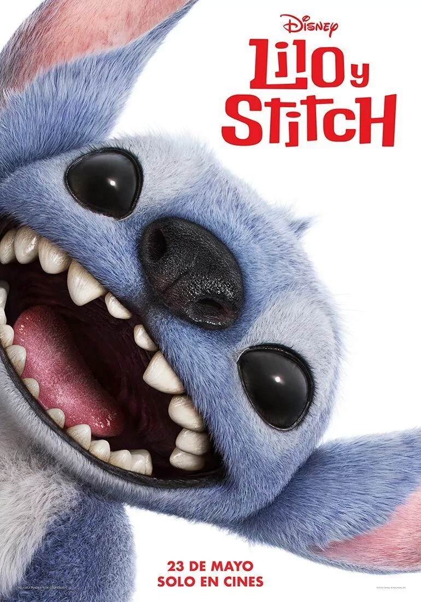
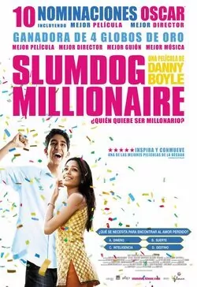

Noticias de cine y series

Stitch nos dedica una sonrisa traviesa en el primer póster del remake en acción real de
'Lilo y Stitch'
El primer cartel del live-action de 'Lilo y Stitch' nos ofrece
un vistazo mucho más de cerca al peludo extraterrestre azul, que vuelve a los cines el 23
de mayo de 2025.
Hace un par de semanas Disney lanzaba desde la D23 de Brasil la primera imagen oficial
de Stitch en el remake en acción real de 'Lilo y Stitch', y hoy nos llega el primer póster
de la película.
Si en el primer fotograma veíamos al "adorable y esponjoso" extraterrestre azul con una
expresión muy seria, en el primer cartel del film, Stitch nos dedica una amplia y traviesa
sonrisa con la que parece que se va a comer la cámara.
Leer mas

'Wicked': Cynthia Erivo desgrana el trabajo en equipo para hacer volar a Elphaba y su importancia como referente
Hablamos con Cynthia Erivo, la protagonista de 'Wicked', sobre el trabajo el equipo que conlleva dar vida a Elphaba y cómo la bruja puede inspirar a las nuevas generaciones y, concretamente, a la comunidad queer.
La película de 'Wicked' se anunció en 2016, con estreno previsto inicialmente para 2019.
Sin embargo, una serie de contratiempos (entre ellos la pandemia de Covid-19) obligaron a
posponer la producción varias veces. Dicen que esos retrasos en realidad no eran otra cosa
que el universo haciendo tiempo para que la película encontrase a su director y protagonistas
perfectos
Leer mas

'Slumdog millionaire' podría tener una secuela
La película de 2008 dirigida por Danny Boyle y protagonizada por Dev Patel ganó 8 premios
Oscar y, dieciséis años después, podría tener una secuela o adaptación televisiva.
En la 81ª edición de los Premios Óscar 'Slumdog millionaire' se llevó la estatuilla a
Mejor Película y otras siete más, entre las que se encuentra el galardón a Mejor Dirección
para Danny Boyle, la primera y hasta ahora única del británico. Han pasado más de quince años
desde su estreno y una secuela o adaptación televisiva podría o estar en camino.
Leer mas